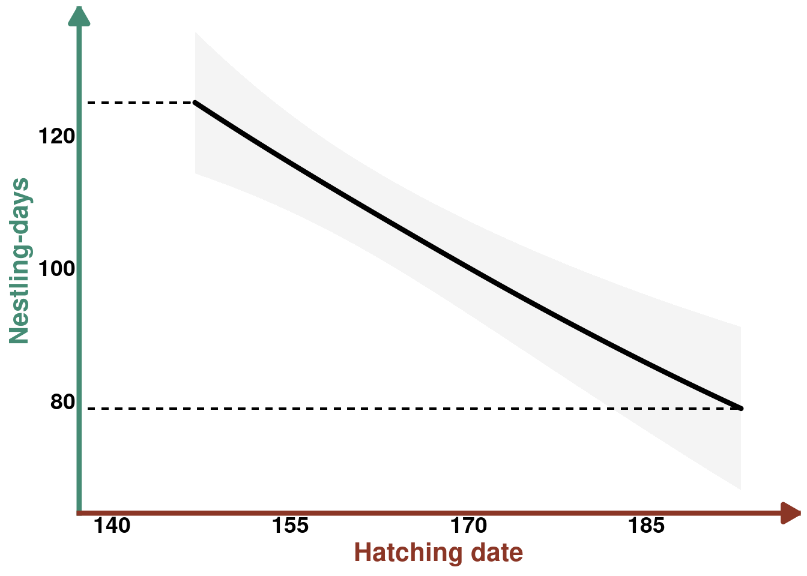
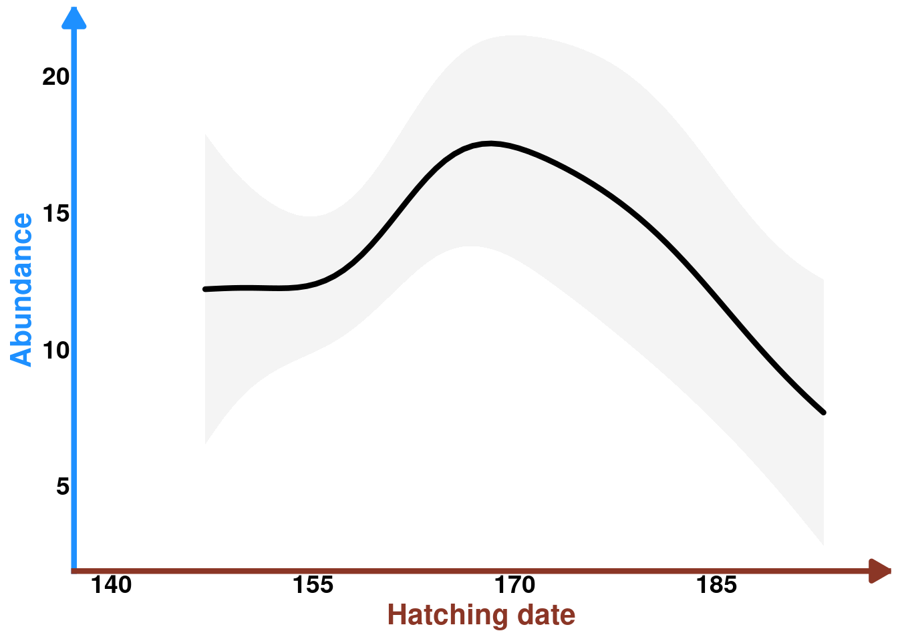
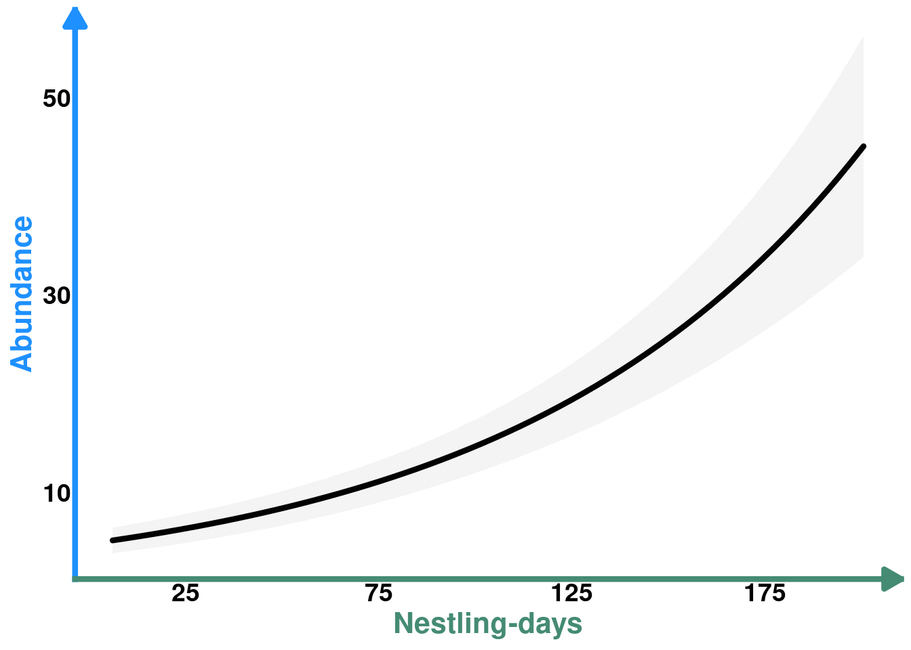
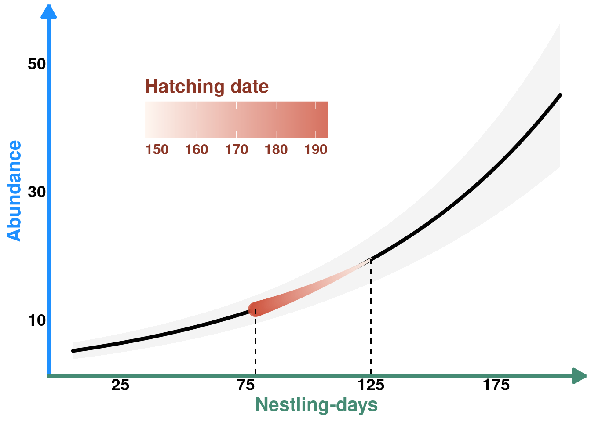
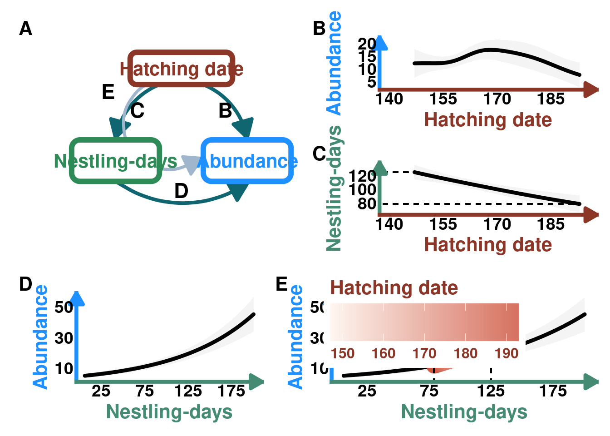
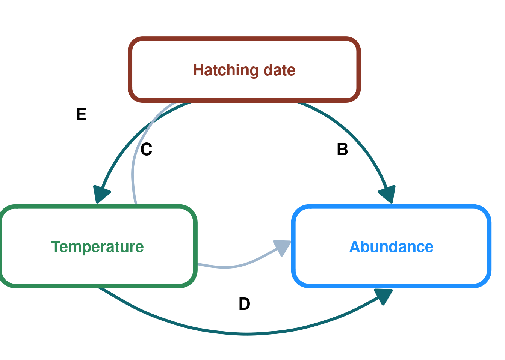
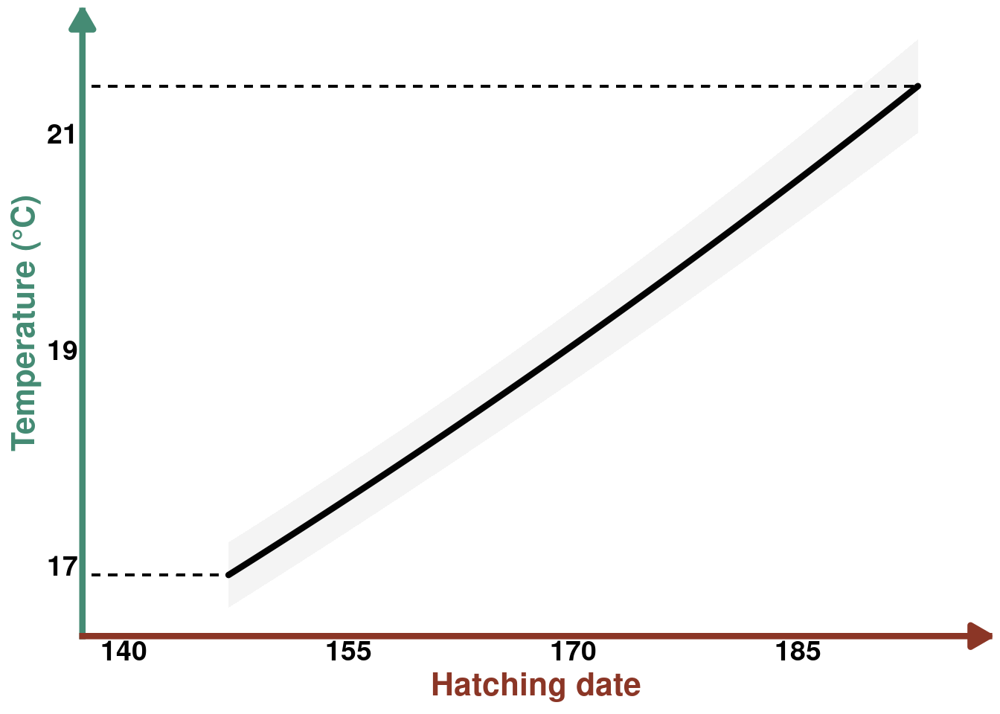
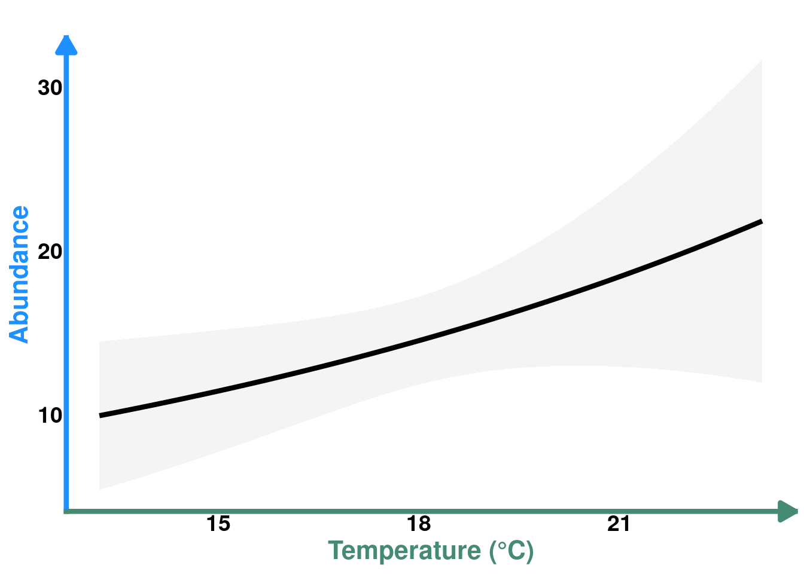
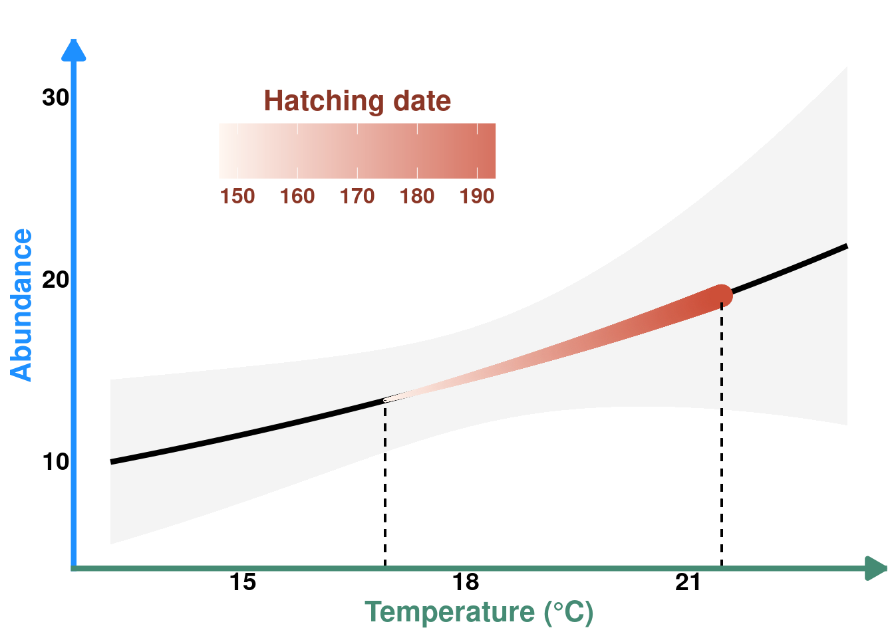
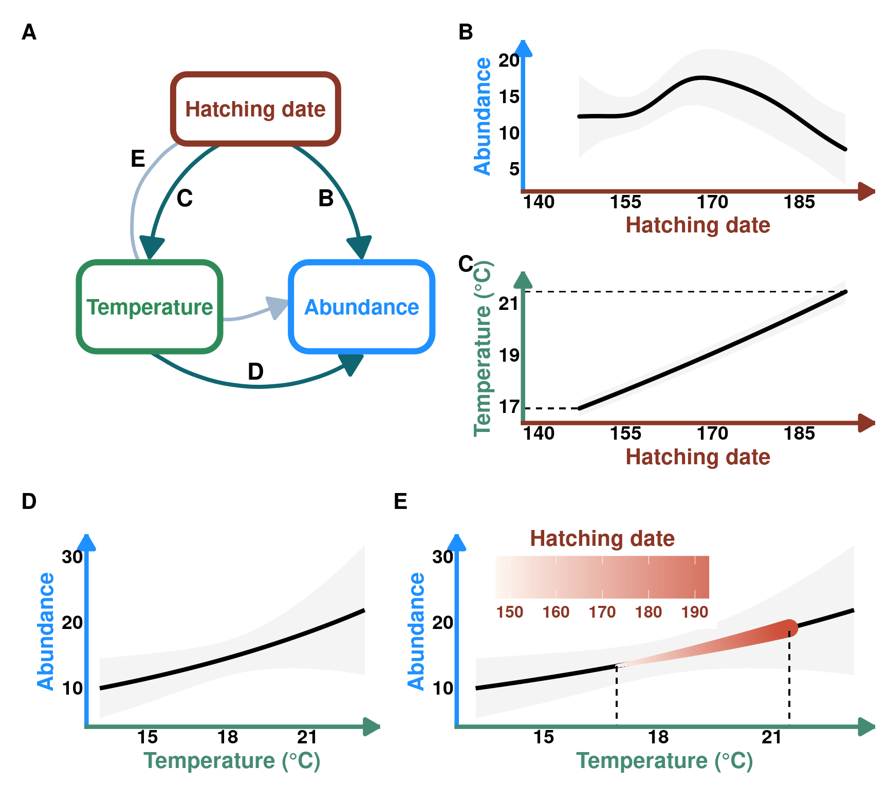

library(tidyverse) # data manipulation and plotting
library(readxl) # read excel files
library(glmmTMB) # frequentist GLMMs
library(marginaleffects) # marginal predictions
library(patchwork) # multiple plots
library(mgcv) # GAMMsCase Study - Protocalliphora abundance in Tree Swallow nests
Here, we display how to use the visualization method of indirect effects using a real-world example from Coroller-Chouraki et al. (2026) LINK. While the authors examined the effects of several putative causes of the abundance of Protocalliphora spp. in the nests of Tree Swallows breeding along a gradient of agricultural intensity, they focused on direct effects and neglected to formally quantify or visualize hypothesized indirect effects. Here, we apply our novel visualization procedure to two indirect effects linked to the reproductive timing of swallows and included in the DAG on which the aforementioned study was based. More details about the hypothesized causal links in the system and theoretical explanations for the indirect effects visualized here can be found in Coroller-Chouraki et al. (2026) and Bush-Beaupré et al. (2026) LINK.
The data for the case study can be downloaded here
Set up workspace
Load packages
DAG plotting function
#' Create a DAG plot with rounded boxes and arrows
#'
#' @param labels Character vector of length 3 with names for Exposure, Mediator, Outcome
#' @param arrow_labels Character vector of length 4 with labels for paths B, C, D, E (default: c("B", "C", "D", "E"))
#' @param box_colors Character vector of length 3 with hex colors for boxes (default: c("tomato4", "#2E8B57", "#1E90FF"))
#' @param arrow_color Color for arrows (default: "#0F6670")
#' @return A ggplot object
create_dag_plot <- function(labels = c("Exposure", "Mediator", "Outcome"),
arrow_labels = c("B", "C", "D", "E"),
box_colors = c("tomato4", "#2E8B57", "#1E90FF"),
arrow_color = "#0F6670") {
# Path diagram (DAG) — rounded boxes + arrows
# boxes: name, center x/y, width, height, border colour
# Using wider coordinate system (0-1.4 for x) to create rectangular plot
boxes <- data.frame(
name = labels,
x = c(0.7, 0.25, 1.15),
y = c(0.8, 0.4, 0.4),
width = c(0.7, 0.6, 0.6),
height = c(0.14, 0.18, 0.18),
col = box_colors,
stringsAsFactors = FALSE
)
# arrow head style
arr_closed <- grid::arrow(length = unit(0.22, "inches"), type = "closed")
arr_open <- grid::arrow(length = unit(0.22, "inches"), type = "open")
# Draw arrows FIRST so they appear behind boxes
p <- ggplot() + xlim(0.2, 1.4) + ylim(0.2, 0.9) +
# B: Exposure -> Outcome (right, curved)
geom_curve(aes(x = 0.81, y = 0.74, xend = 1.15, yend = 0.5),
curvature = -0.28, color = arrow_color, size = 1.4, arrow = arr_closed) +
# C: Exposure -> Mediator (left, curved)
geom_curve(aes(x = 0.59, y = 0.74, xend = 0.25, yend = 0.5),
curvature = 0.28, color = arrow_color, size = 1.4, arrow = arr_closed) +
# D: Mediator -> Outcome (bottom, long curve)
geom_curve(aes(x = 0.25, y = 0.31, xend = 1.15, yend = 0.3),
curvature = 0.32, color = arrow_color, size = 1.4, arrow = arr_closed) +
# E: dashed indirect (Exposure -> Outcome via dashed curved line)
geom_curve(aes(x = 0.62, y = 0.765, xend = 0.84, yend = 0.41),
curvature = 1.5, color = "slategray3", size = 1.2, arrow = arr_closed)
# Now draw boxes on top of arrows
for(i in seq_len(nrow(boxes))){
bx <- boxes[i,]
xmin <- bx$x - bx$width/2
xmax <- bx$x + bx$width/2
ymin <- bx$y - bx$height/2
ymax <- bx$y + bx$height/2
# draw a rounded rectangle as a grob and place it with annotation_custom
rr <- grid::roundrectGrob(r = unit(0.2, "snpc"),
gp = grid::gpar(fill = "white", col = bx$col, lwd = 6))
p <- p + annotation_custom(rr, xmin = xmin, xmax = xmax, ymin = ymin, ymax = ymax) +
annotate("text", x = bx$x, y = bx$y, label = bx$name,
fontface = "bold", size = 5.5, colour = bx$col)
}
# Add labels for arrows on top
p <- p +
annotate("text", x = 1.00, y = 0.62, label = arrow_labels[1], size = 6, fontface = "bold") +
annotate("text", x = 0.40, y = 0.62, label = arrow_labels[2], size = 6, fontface = "bold") +
annotate("text", x = 0.70, y = 0.27, label = arrow_labels[3], size = 6, fontface = "bold") +
annotate("text", x = 0.2, y = 0.7, label = arrow_labels[4], size = 6, fontface = "bold") +
coord_cartesian(clip = "off") +
theme_void()
return(p)
}Data
data_protos <- read_excel("data_indirecteffects.xlsx") |>
# scale the data (except comp1 comp2 as it was already centered between 0)
mutate( scl_cumulated_chicks = as.vector(scale(cumulated_chicks)),
scl_a1j1_p = as.vector(scale(a1j1_p)),
scl_a1j1_t = as.vector(scale(a1j1_t)),
scl_mean_t_protos = as.vector(scale(mean_t_protos)),
scl_mean_p_protos = as.vector(scale(mean_p_protos)),
scl_mean_t_bird = as.vector(scale(mean_t_bird)),
scl_mean_p_bird = as.vector(scale(mean_p_bird)),
scl_timing_clutch = as.vector(scale(timing_clutch)),
year = as.factor(year),
farm = as.factor(farm),
agemom = as.factor(agemom))
glimpse(data_protos)Rows: 1,175
Columns: 24
$ idcouvee <dbl> 6072049, 6072067, 6252031, 6312061, 6312097, 6432…
$ farm <fct> 339, 339, 339, 339, 339, 339, 339, 339, 339, 339,…
$ nichoir <dbl> 20, 20, 29, 32, 32, 38, 41, 44, 44, 47, 47, 20, 2…
$ year <fct> 2008, 2011, 2005, 2010, 2016, 2004, 2006, 2005, 2…
$ mean_t_protos <dbl> 19.21152, 19.99097, 21.56581, 17.86704, 21.44941,…
$ mean_p_protos <dbl> 4.412069, 3.313214, 3.259667, 4.749355, 2.857241,…
$ mean_t_bird <dbl> 18.95252, 19.44646, 20.88006, 17.77005, 21.32746,…
$ mean_p_bird <dbl> 3.886667, 3.565500, 3.312273, 4.907391, 3.408095,…
$ a1j1_p <dbl> 149.65, 277.90, 199.09, 150.80, 147.43, 206.36, 2…
$ a1j1_t <dbl> 556.945, 573.965, 520.830, 710.695, 477.120, 519.…
$ timing_clutch <dbl> 154, 166, 171, 154, 185, 171, 154, 154, 159, 190,…
$ cumulated_chicks <dbl> 126, 92, 87, 149, 69, 84, 88, 110, 92, 88, 110, 1…
$ n_protos <dbl> 31, 29, 1, 9, 2, 1, 5, 8, 25, 12, 2, 9, 70, 35, 6…
$ comp1 <dbl> 1.7136893, 2.4615953, 1.9719222, 2.6452952, 2.648…
$ comp2 <dbl> -0.39773502, 0.08269011, -0.51961803, 1.70980123,…
$ agemom <fct> ASY, SY, ASY, ASY, SY, ASY, ASY, ASY, ASY, ASY, A…
$ scl_cumulated_chicks <dbl> 0.76339770, -0.26769764, -0.41932931, 1.46090337,…
$ scl_a1j1_p <dbl> -1.10439407, 1.79796415, 0.01445654, -1.07836902,…
$ scl_a1j1_t <dbl> 0.9545618, 1.2213581, 0.3884427, 3.3646632, -0.29…
$ scl_mean_t_protos <dbl> 0.72057902, 1.30824321, 2.49559694, -0.29309542, …
$ scl_mean_p_protos <dbl> 0.3450492, -0.5928678, -0.6385729, 0.6329363, -0.…
$ scl_mean_t_bird <dbl> 0.76920191, 1.10353351, 2.07389174, -0.03117221, …
$ scl_mean_p_bird <dbl> -0.005763027, -0.222595172, -0.393558782, 0.68336…
$ scl_timing_clutch <dbl> -1.023968550, 0.726086790, 1.455276515, -1.023968…Metadata
idcouvee — Unique identifier for each clutch (nesting attempt). [anonymized]
farm — Farm or study site where the nest box is located. [anonymized]
nichoir — Nest box identifier within a given farm. [anonymized]
year — Year in which the breeding attempt occurred.
n_protos — Number of Protocalliphora spp. puparia (pupal cases) found in the nest at the end of the breeding season; used as a proxy of ectoparasite abundance.
cumulated_chicks — Proxy for host availability for Protocalliphora larvae, calculated as the number of chicks multiplied by the number of days they remained in the nest.
mean_t_bird — Mean air temperature (°C) during the period corresponding to the nestling stage of the host chicks. (From hatching to fledging or demise)
mean_p_bird — Mean precipitation (mm) during the period corresponding to the nestling stage of the host chicks. (From hatching to fledging or demise)
mean_t_protos — Mean air temperature (°C) during the time window relevant for Protocalliphora larvae development (the same window as for chicks +7 days).
mean_p_protos — Mean precipitation (mm) during the time window relevant for Protocalliphora larvae development (the same window as for chicks +7 days).
a1j1_t — Cumulative sum of hourly degrees above 5 °C between April 1 and June 1 (thermal accumulation, proxy for early-season temperature conditions).
a1j1_p — Cumulative sum of hourly precipitation between April 1 and June 1 (proxy for early-season moisture conditions).
timing_clutch — Day of the year corresponding to the hatching date of the first chick in the clutch (proxy for breeding phenology).
comp1 — First component from the rPCA describing agricultural landscape composition. Positively correlated with maize and soybean cover. Negatively correlated with forage and tree cover. Explains ~79% of the variance in habitat composition.
comp2 — Second component from the rPCA describing agricultural landscape composition. Positively correlated with tree cover. Negatively correlated with forage cover. Explains ~17% of the variance in habitat composition.
agemom — Age class of the Tree Swallow mother for the given clutch (2nd year = young adult; After 2nd year = older adult).
Case 1 - Indirect effect of hatch date on Protocalliphora abundance through nestling-days
DAG
Code
DAG_2 <- create_dag_plot(
labels = c("Hatching date", "Nestling-days", "Abundance")
) +
xlim(0.05, 1.4) +
theme(plot.margin = margin(t = 10, r = 10, b = 10, l = 10, unit = "pt"))
print(DAG_2)
Models
Nestling-days ~ Hatching date (Mediator ~ Exposure)
m_host <- gam(data = data_protos,
formula = cumulated_chicks ~
s(year, bs = "re") + s(farm, by = year, bs = "re") +
scl_a1j1_p + scl_a1j1_t +
agemom +
s(scl_timing_clutch) +
te(comp1, comp2) + te(scl_mean_t_bird, scl_mean_p_bird),
family = gaussian(link = "log"), method = "REML")Predictions
We need to unscale hatching date after generating the predictions for the prediction plot.
# population effect prediction
p_hatchdate_nestdays <- predictions(m_host,
newdata = datagrid(scl_timing_clutch =
seq(from = min(data_protos$scl_timing_clutch),
to = max(data_protos$scl_timing_clutch),
by = 0.1)),
exclude = c("s(farm)","s(year)"))
# we obtained predictions, but need to unscale the explanatory variable "timing_clutch"
p_hatchdate_nestdays <- p_hatchdate_nestdays |>
mutate(hatch_date = scl_timing_clutch * sd(data_protos$timing_clutch) + mean(data_protos$timing_clutch)) |>
select(-c(year,farm))Prediction plot
plot_hatchdate_nestdays <- ggplot(data = p_hatchdate_nestdays, aes(x = hatch_date , y = estimate)) +
geom_ribbon(aes(ymax = conf.high , ymin = conf.low),alpha = 0.05)+
geom_line( linewidth = 1.5, lineend = "round") +
geom_segment(y= min(p_hatchdate_nestdays$estimate),
x = 0, xend= max(p_hatchdate_nestdays$hatch_date), linetype= "dashed") +
geom_segment(y=max(p_hatchdate_nestdays$estimate), x = 0, xend= min(p_hatchdate_nestdays$hatch_date), linetype= "dashed") +
theme_classic() +
labs(title = NULL,
y = "Nestling-days", x = "Hatching date") +
theme(axis.line.y = element_line(arrow = arrow(
length = unit(0.15, "inches"),
ends = "last",
type = "closed"),
linewidth = 1.5,
color = "aquamarine4"),
axis.line.x = element_line(arrow = arrow(
length = unit(0.15, "inches"),
ends = "last",
type = "closed"),
linewidth = 1.5,
color = "tomato4"),
axis.ticks = element_blank(),
axis.title.x = element_text(color = "tomato4", size = 16, face = "bold", family = "", lineheight = 1.5),
axis.title.y = element_text(color = "aquamarine4", size = 16, face = "bold", family = "", lineheight = 1.5),
axis.text.x = element_text(face = "bold", size = 14),
axis.text.y = element_text(face = "bold", size = 14)) +
scale_y_continuous(breaks = seq(80, 120, by = 20)) +
scale_x_continuous(breaks = seq(140, 190, by = 15))+
coord_cartesian(xlim = c(140, 195))
plot_hatchdate_nestdays
Protocalliphora abundance ~ Hatching date + nestling-days (Outcome ~ Exposure + Mediator)
m_protos <- gam(data = data_protos, formula = n_protos ~
s(year, bs = "re") + s(farm, by = year, bs = "re") +
scl_a1j1_t + scl_a1j1_p +
s(scl_timing_clutch) + scl_cumulated_chicks +
te(comp1,comp2) + te(scl_mean_t_protos, scl_mean_p_protos),
family = tw(link = "log"), method = "REML")Protocalliphora abundance ~ Hatching date (Outcome ~ Exposure)
Predictions
p_hatchdate_protos <- predictions(m_protos, newdata =
datagrid(scl_timing_clutch =
seq(from = min(data_protos$scl_timing_clutch),
to = max(data_protos$scl_timing_clutch),
by = 0.1)),
exclude = c("s(farm)","s(year)")) #population effect prediction
#we got the predictions, but need to unscale the explanatory variable "timing_clutch"
p_hatchdate_protos <- p_hatchdate_protos |>
mutate(hatch_date = scl_timing_clutch * sd(data_protos$timing_clutch) + mean(data_protos$timing_clutch)) |>
select(-c(year,farm))Prediction plot
plot_hatchdate_proto <- ggplot(data = p_hatchdate_protos, aes(x = hatch_date , y = estimate)) +
geom_ribbon(aes(ymax = conf.high , ymin = conf.low),alpha = 0.05)+
geom_line( linewidth = 1.5, lineend = "round") +
theme_classic() +
labs(title = NULL,
y = "Abundance", x = "Hatching date") +
theme(axis.line.y = element_line(arrow = arrow(
length = unit(0.15, "inches"),
ends = "last",
type = "closed"),
linewidth = 1.5,
color = "dodgerblue1"),
axis.line.x = element_line(arrow = arrow(
length = unit(0.15, "inches"),
ends = "last",
type = "closed"),
linewidth = 1.5,
color = "tomato4"),
axis.ticks = element_blank(),
axis.title.x = element_text(color = "tomato4", size = 16, face = "bold", family = "", lineheight = 1.5),
axis.title.y = element_text(color = "dodgerblue1", size = 16, face = "bold", family = "", lineheight = 1.5),
axis.text.x = element_text(face = "bold", size = 14),
axis.text.y = element_text(face = "bold", size = 14)) +
scale_y_continuous(breaks = seq(5,20, by = 5)) +
scale_x_continuous(breaks = seq(140, 190, by = 15)) +
coord_cartesian(xlim = c(140, 195))
plot_hatchdate_proto
Protocalliphora abundance ~ Nestling-days (Outcome ~ Mediator)
Predictions
p_nestdays_protos <- predictions(m_protos, newdata =
datagrid(scl_cumulated_chicks = seq(from = min(data_protos$scl_cumulated_chicks), to = max(data_protos$scl_cumulated_chicks), by = 0.1)), exclude = c("s(farm)","s(year)")) #population effect prediction
#we got the predictions, but need to unscale the explanatory variable "cumulated_chics" (=host availability)
p_nestdays_protos <- p_nestdays_protos |>
mutate(cumulated_chicks = scl_cumulated_chicks * sd(data_protos$cumulated_chicks) + mean(data_protos$cumulated_chicks)) |> select(-c(year, farm))Prediction plot
plot_nestdays_protos <- ggplot(data = p_nestdays_protos, aes(y = estimate, x = cumulated_chicks)) +
geom_line(linewidth = 1.5, lineend = "round") +
geom_ribbon(aes(ymin = conf.low, ymax = conf.high), alpha = 0.05) +
theme_classic() +
labs(title = NULL,
y = "Abundance", x = "Nestling-days") +
theme(axis.line.y = element_line(arrow = arrow(
length = unit(0.15, "inches"),
ends = "last",
type = "closed"),
linewidth = 1.5,
color = "dodgerblue1"),
axis.line.x = element_line(arrow = arrow(
length = unit(0.15, "inches"),
ends = "last",
type = "closed"),
linewidth = 1.5,
color = "aquamarine4"),
axis.ticks = element_blank(),
axis.title.x = element_text(color = "aquamarine4", size = 16, face = "bold", family = "", lineheight = 1.5),
axis.title.y = element_text(color = "dodgerblue1", size = 16, face = "bold", family = "", lineheight = 1.5),
axis.text.x = element_text(face = "bold", size = 14),
axis.text.y = element_text(face = "bold", size = 14))+
scale_y_continuous(breaks = seq(10,50, by = 20))+
scale_x_continuous(breaks = seq(25,175, by = 50))
plot_nestdays_protos
Indirect effect
Predictions
We need the nestling-days values as predicted by hatching date to predict the values of Protocalliphora abundance along that predicted range. Since nestling-days are scaled in the model, we need to scale the predicted values using the original dataset, obtain the predicted Protocalliphora values and convert back to the original scale.
p_ind_hatchdate_protos <- predictions(m_protos,
newdata = datagrid(
scl_cumulated_chicks = (p_hatchdate_nestdays$estimate - mean(data_protos$cumulated_chicks)) / sd(data_protos$cumulated_chicks)),
exclude = c("s(farm)","s(year)")) |>
# unscale cumulated chicks
mutate(cumulated_chicks = scl_cumulated_chicks*sd(data_protos$cumulated_chicks) + mean(data_protos$cumulated_chicks)) |>
# Add unscaled hatch_date from the prediction grid
left_join(p_hatchdate_nestdays |>
select(estimate, hatch_date) |>
rename(cumulated_chicks = estimate)) Prediction plot
COLS <- alpha(colorRampPalette(c("seashell","tomato3"))(30),0.8)
plot_ind_hatchdate_protos <- plot_nestdays_protos +
geom_line(data = p_ind_hatchdate_protos,
aes(y = estimate, x = cumulated_chicks, color = hatch_date,
linewidth = hatch_date), lineend = "round") +
geom_segment(x=min(p_ind_hatchdate_protos$cumulated_chicks), y=0, yend= min(p_ind_hatchdate_protos$estimate), linetype= "dashed") +
geom_segment(x=max(p_ind_hatchdate_protos$cumulated_chicks), y=0, yend=max(p_ind_hatchdate_protos$estimate), linetype= "dashed") +
scale_color_gradientn(colours = COLS, name = "Hatching date") +
guides(linewidth = "none") +
theme(legend.position = "inside",
legend.key.size = unit(1.1, "cm"),
legend.position.inside = c(0.35, 0.7),
legend.direction = "horizontal",
legend.text = element_text(color = "tomato4", size = 12, face = "bold", family = "", lineheight = 1.5),
legend.title = element_text(color = "tomato4",size = 16, face = "bold", family = "", lineheight = 1.5),
legend.title.position = "top") +
scale_y_continuous(breaks = seq(10,50, by = 20))
plot_ind_hatchdate_protos
Publication Figure 2
# Create right column with B and C stacked
right_col_top_2 <- plot_hatchdate_proto / plot_hatchdate_nestdays
# Create layout: DAG on left, right column on right for rows 1-2
top_section_2 <- (DAG_2 | right_col_top_2) + plot_layout(widths = c(1, 1))
# Row 3 has two plots side by side
row3_2 <- plot_nestdays_protos + plot_ind_hatchdate_protos + plot_layout(widths = c(0.7, 1))
# Combine all
fig_2 <- top_section_2 / row3_2 +
plot_layout(heights = c(2, 1)) +
plot_annotation(tag_levels = 'A') &
theme(plot.tag = element_text(size = 16, face = "bold"))
fig_2
Case 2 - Indirect effect of hatch date on Protocalliphora abundance through temperature
DAG
DAG_3 <- create_dag_plot(
labels = c("Hatching date", "Temperature", "Abundance")
) +
xlim(0.05, 1.4) +
theme(plot.margin = margin(t = 10, r = 10, b = 10, l = 10, unit = "pt"))Scale for x is already present.
Adding another scale for x, which will replace the existing scale.print(DAG_3)
Model
The only model missing for this analysis is Temperature ~ Hatching date
Temperature ~ Hatching date (Mediator ~ Exposure)
m_temp <- glmmTMB(mean_t_protos ~ timing_clutch + (1|year/farm), family = lognormal, data = data_protos)Predictions
pred_temp <- predictions(m_temp,
newdata = datagrid(timing_clutch = seq(from = min(data_protos$timing_clutch), to = max(data_protos$timing_clutch), length.out = 3000)),
re.form = NA)Prediction Plot
plot_hatchdate_temp <- ggplot(data = pred_temp) +
geom_line(aes(y = estimate, x = timing_clutch), linewidth = 1.5, lineend = "round" ) +
geom_ribbon(aes(ymin = conf.low, ymax = conf.high, x = timing_clutch), alpha = 0.05) +
theme_classic() +
geom_segment(y= min(pred_temp$estimate),
x = 0, xend= min(pred_temp$timing_clutch), linetype= "dashed") +
geom_segment(y=max(pred_temp$estimate), x = 0, xend= max(pred_temp$timing_clutch), linetype= "dashed") +
labs(title = NULL,
y = "Temperature (°C)",
x = "Hatching date")+
theme(axis.line.y = element_line(arrow = arrow(
length = unit(0.15, "inches"),
ends = "last",
type = "closed"),
linewidth = 1.5,
color = "aquamarine4"),
axis.line.x = element_line(arrow = arrow(
length = unit(0.15, "inches"),
ends = "last",
type = "closed"),
linewidth = 1.5,
color = "tomato4"),
axis.ticks = element_blank(),
axis.title.x = element_text(color = "tomato4", size = 16, face = "bold", family = "", lineheight = 1.5),
axis.title.y = element_text(color = "aquamarine4", size = 16, face = "bold", family = "", lineheight = 1.5),
axis.text.x = element_text(face = "bold", size = 14),
axis.text.y = element_text(face = "bold", size = 14)) +
scale_x_continuous(breaks = seq(140, 190, by = 15)) +
scale_y_continuous(breaks = seq(17, 21, by =2)) +
coord_cartesian(xlim = c(140, 195))
print(plot_hatchdate_temp)
Protocalliphora abundance ~ Temperature (Outcome ~ Mediator)
Predictions
pred_protos_t <- predictions(m_protos,
newdata = datagrid(
scl_mean_t_protos = seq(from = min(data_protos$scl_mean_t_protos), to = max(data_protos$scl_mean_t_protos), length.out = 40)),
exclude = c("s(farm)","s(year)")) |>
mutate(mean_t_protos = scl_mean_t_protos*sd(data_protos$mean_t_protos) + mean(data_protos$mean_t_protos)) # unscale tempPrediction plot
plot_abund_temp <- ggplot(data = pred_protos_t) +
geom_ribbon(aes(ymin = conf.low, ymax = conf.high, x = mean_t_protos), alpha = 0.05) +
geom_line(aes(y = estimate, x = mean_t_protos), linewidth = 1.5) +
labs(title = "",
y = "Abundance",
x = "Temperature (°C)") +
theme_classic() +
theme(axis.line.y = element_line(arrow = arrow(
length = unit(0.15, "inches"),
ends = "last",
type = "closed"),
linewidth = 1.5,
color = "dodgerblue1"),
axis.line.x = element_line(arrow = arrow(
length = unit(0.15, "inches"),
ends = "last",
type = "closed"),
linewidth = 1.5,
color = "aquamarine4"),
axis.ticks = element_blank(),
axis.title.x = element_text(color = "aquamarine4", size = 16, face = "bold", family = "", lineheight = 1.5),
axis.title.y = element_text(color = "dodgerblue1", size = 16, face = "bold", family = "", lineheight = 1.5),
axis.text.x = element_text(face = "bold", size = 14),
axis.text.y = element_text(face = "bold", size = 14))
plot_abund_temp
Indirect effect
Predictions
pred_protos_pt <- predictions(m_protos,
newdata = datagrid(
scl_mean_t_protos = (pred_temp$estimate - mean(data_protos$mean_t_protos)) / sd(data_protos$mean_t_protos)),
# scale predicted temp
exclude = c("s(farm)","s(year)")) |>
mutate(mean_t_protos = scl_mean_t_protos*sd(data_protos$mean_t_protos) + mean(data_protos$mean_t_protos)) |> # unscale
mutate(timing_clutch = pred_temp$timing_clutch) # Add unscaled timing clutchPlot
plot_ind_hatchdate_temp <- plot_abund_temp + geom_line(data = pred_protos_pt,
aes(y = estimate, x = mean_t_protos, color = timing_clutch,
linewidth = timing_clutch), lineend = "round") +
geom_segment(x=min(pred_protos_pt$mean_t_protos), y=0, yend= min(pred_protos_pt$estimate), linetype= "dashed") +
geom_segment(x=max(pred_protos_pt$mean_t_protos), y=0, yend=max(pred_protos_pt$estimate), linetype= "dashed") +
labs(y = "Abundance", title = "", color = "Hatching date") +
scale_color_gradientn(colours = COLS) +
guides(linewidth = "none", color = guide_colorbar(title.position = "top", title.hjust = 0.5)) +
theme(legend.position = "inside",
legend.key.size = unit(1.1, "cm"),
legend.position.inside = c(0.35, 0.8),
legend.direction = "horizontal",
legend.text = element_text(color = "tomato4", size = 12, face = "bold", family = "", lineheight = 1.5),
legend.title = element_text(color = "tomato4",size = 16, face = "bold", family = "", lineheight = 1.5),
legend.title.position = "top") +
scale_y_continuous(breaks = seq(10,30, by = 10))
plot_ind_hatchdate_temp
Publication Figure 3
# Create right column with B and C stacked
right_col_top_3 <- plot_hatchdate_proto / plot_hatchdate_temp
# Create layout: DAG on left, right column on right for rows 1-2
top_section_3 <- (DAG_3 | right_col_top_3) + plot_layout(widths = c(1, 1))
# Row 3 has two plots side by side
row3_3 <- plot_abund_temp + plot_ind_hatchdate_temp + plot_layout(widths = c(0.7, 1))
# Combine all
fig_3 <- top_section_3 / row3_3 +
plot_layout(heights = c(2, 1)) +
plot_annotation(tag_levels = 'A') &
theme(plot.tag = element_text(size = 16, face = "bold"))
fig_3